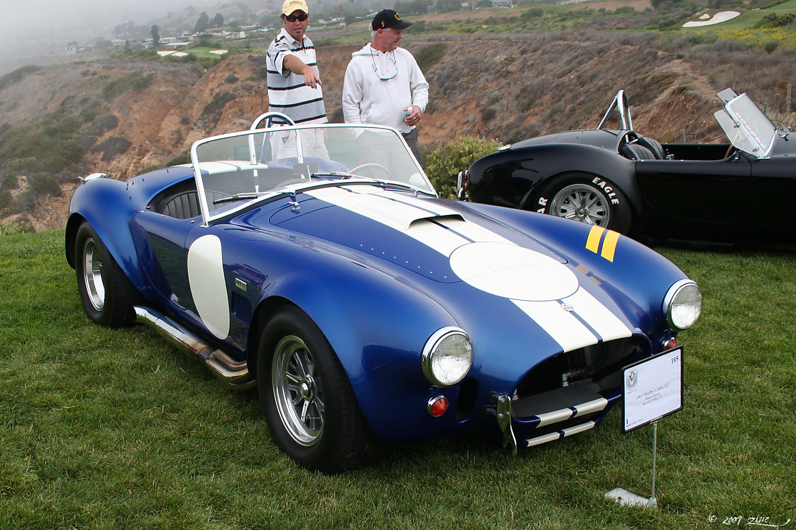

The shelby cobra 427 super snake maid $5.5 million dollars on January 21,2007 it was sold at the Barrt Jackson collector car auction . The shelby cobra a 800-horse power sport car was one of only two cars maid one was used personaly as a transportational vihicle by Carrol Shelby.The second car was bought by a collector Ron Pratt of Chandler,Arizona.
